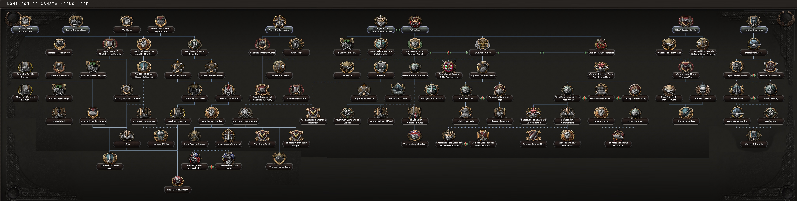
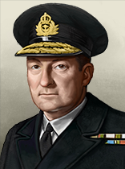
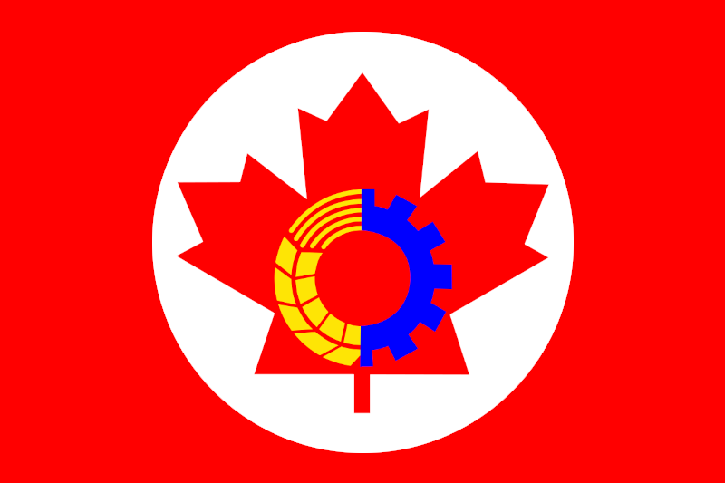
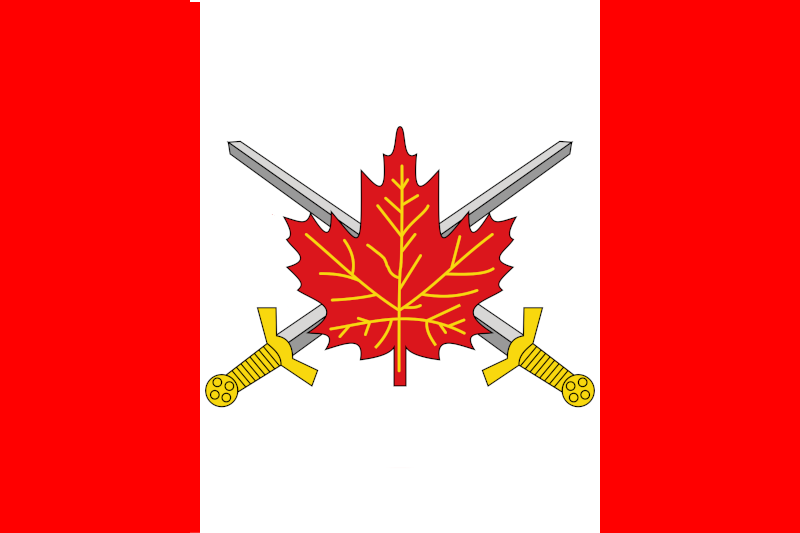
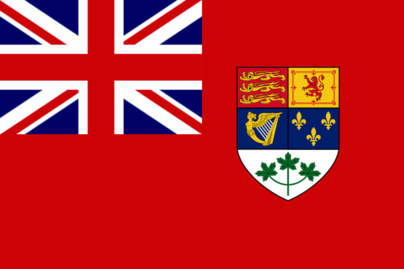
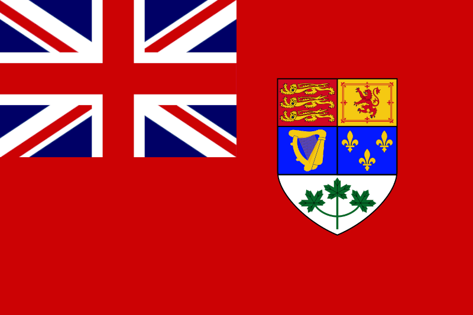

| 陆军科技 | 海军科技 | 空军科技 | 电子与工业 |
|---|---|---|---|
无
|
|
没有
|
「无」 |
| 陆军学说 | 海军学说 | 空军学说 |
|---|---|---|
|
|
「无」 |
原页面：Dominion of Canada
The  加拿大自治领 is a
加拿大自治领 is a  英国
英国  自治领 in North America with a population of 10.21 M. It borders the
自治领 in North America with a population of 10.21 M. It borders the  美国 to the south and west, and the
美国 to the south and west, and the  英国 colony of Newfoundland to the east.
英国 colony of Newfoundland to the east.
During the First World War, Canada automatically entered the conflict on the side of the Entente as a semi-independent dominion of the British Empire. With the Statute of Westminster in 1931, Canada gained more autonomy within the bounds of its dominion status; However, like the other dominions, its constitution could only be amended by the British parliament, its highest court was in London, and all Canadians were British Citizens. Canada was a key member of the British Empire with strong ties to its parent country and followed Britain's declaration of war against  德国 on the 10 September 1939.
德国 on the 10 September 1939.
Canada's military in 1939 was small, poorly-equipped, and technologically outdated, despite measures taken by the government of Mackenzie King in 1936 to gradually increase the gutted defense budget. After the outbreak of war, Britain placed responsibility for the protection of North America in Canadian hands, and the nation placed military expansion and modernization as a top priority.
By the war's end over 15% of all Canadian citizens would serve in uniform (out of a prewar population of 11 million) and Canada would possess the fourth-largest air force and fifth-largest naval surface fleet in the world. Canada's industrial contribution to the war was highly significant, particularly in the form of raw materials and motorized vehicles (Canada was the second-largest producer of wheeled vehicles after the  美国). Canadian troops fought on all fronts in Western Europe, particularly in Italy and in France, during and after D-Day.
美国). Canadian troops fought on all fronts in Western Europe, particularly in Italy and in France, during and after D-Day.

Canada's unique focus tree has six main branches:
 加拿大 开局拥有以下国家精神：
加拿大 开局拥有以下国家精神：
 加拿大开局拥有 3 个可用科研槽；另有 2 个可通过国策树解锁。
加拿大开局拥有 3 个可用科研槽；另有 2 个可通过国策树解锁。
| 陆军科技 | 海军科技 | 空军科技 | 电子与工业 |
|---|---|---|---|
无
|
|
没有
|
「无」 |
| 陆军学说 | 海军学说 | 空军学说 |
|---|---|---|
|
|
「无」 |
| 陆军科技 | 海军科技 | 空军科技 | 电子与工业 |
|---|---|---|---|
无
|
|
没有
|
|
| 陆军学说 | 海军学说 | 空军学说 |
|---|---|---|
|
|
|
 加拿大 has a number of unique names and appearances for various technologies and equipment, listed here. Particularly Commonwealth armaments, including their own Equipment. Note that generic names are not listed.
加拿大 has a number of unique names and appearances for various technologies and equipment, listed here. Particularly Commonwealth armaments, including their own Equipment. Note that generic names are not listed.
| 类型 | 1918 | 1936 | 1938 | 1939 | 1940 | 1942 | 1943 | 1944 |
|---|---|---|---|---|---|---|---|---|
| 支援武器 | Vickers MG & Stokes mortar | Lewis Mk. III DEMS & SBML two-inch mortar | Bren Mk. I & ML 3 inch mortar | Bren Mk. III & ML 4.2 inch Mortar | ||||
| 步兵装备 | Ross Rifle | SAL Rifle No.4 MkI | M50 Reising | Johnson M44 | ||||
| 步兵反坦克 | Boys Anti-Tank Rifle | PIAT | ||||||
| 摩托化步兵 | Austin K5 | |||||||
| 机械化 | Priest Kangaroo | Ram Kangaroo | Churchill Kangaroo |
| 科技年份 | 轻型（反坦克/自行火炮/防空） | 中型（反坦克/自行火炮/防空） | 现代（反坦克/自行火炮/防空） | 重型（反坦克/自行火炮/防空） | 超重型（反坦克/自行火炮/防空） |
|---|---|---|---|---|---|
| 1918 | Mark V | ||||
| 1934 | Vickers II (Deacon / Birch / Vickers II AA) | Vickers (NA / Gun Carrier Mk. I / NA) | |||
| 1936 | Matilda LP (Valiant / Priest / Matilda AA) | ||||
| 1938 | Crusader LP (Cavalier / Centaur / Crusader AA) | ||||
| 1940 | Ram (Ram QF 3.7 inch / Sexton / Cromwell AA) | Churchill LP (Churchill Gun Carrier / Churchill AVRE / Churchill AA) | |||
| 1941 | Valentine (Archer / Bishop / Valentine AA) | Tortoise (Iron Duke / NA / NA) | |||
| 1943 | Grizzly (Contentious / Sexton II / Skink) | Black Prince LP (Hector / Black Prince AVRE / Black Prince Marksman) | |||
| 1945 | Centurion (Centurion Malkara / Centurion AVRE / Centurion Marksman) | ||||
| 备注：若无一步不退，中型坦克 I 与 II 将推迟一年解锁。 | |||||
| 科技年份 | 防空炮 | 火炮 | 火箭炮 | 反坦克炮 |
|---|---|---|---|---|
| 1934 | QF 18-pounder | |||
| 1936 | QF 3-inch | QF 2-pounder | ||
| 1939 | QF 25-pounder | |||
| 1940 | QF 40 mm Bofors | RP-3 HE/GP | QF 6-pounder | |
| 1942 | BL 5.5-inch Medium Gun | |||
| 1943 | QF 3.7-inch | RP-3 HE/SAP | QF 17-pounder |
| 科技年份 | 近距空中支援（舰载） | 战斗机（舰载） | 海军轰炸机（舰载） | 重型战斗机 | 战术轰炸机 | 战略轰炸机 |
|---|---|---|---|---|---|---|
| 1933 | Gladiator | Whitley | NA | |||
| 1936 | Hector (Osprey) | Hurricane (Sea Gladiator) | Swordfish (Shark) | Blenheim | 惠灵顿 | Halifax |
| 1940 | Typhoon (Skua) | Spitfire (Fulmar) | Albacore (Roc) | Beaufighter | Beaufort | Lancaster |
| 1944 | Tempest (Sea Fury) | Spiteful (Firefly) | Barracuda (Firebrand) | Mosquito FB | Mosquito B | Lincoln |
| 喷气发动机技术 | ||||||
| 1945 | Vampire | Venom | ||||
| 1950 | CL 100 Canuck | Canberra | Valiant | |||
Bordered on the east and west by expansive oceans, Canada is relatively secure from amphibious invasions if playing on the Allied side. Additionally, the United States is directly to the south of Canada. In a traditional game (i.e., the United States,  英国, and Canada are all members of the same faction), Canada's geography virtually ensures that it is safe from attack. And if it is attacked, the United States is right next door to assist. Thus, Canada does not necessarily need to build up defensive forces on its borders. This allows Canada to specialize on a specific unit type that will help its faction. Alternatively, because it is in a relatively safe corner of the world, Canada can choose not to produce units, but instead funnel its production to countries on the front lines via the lend lease diplomatic action. Canada's special location on the map allows players to experiment with various strategies and decisions unique to Canada.
英国, and Canada are all members of the same faction), Canada's geography virtually ensures that it is safe from attack. And if it is attacked, the United States is right next door to assist. Thus, Canada does not necessarily need to build up defensive forces on its borders. This allows Canada to specialize on a specific unit type that will help its faction. Alternatively, because it is in a relatively safe corner of the world, Canada can choose not to produce units, but instead funnel its production to countries on the front lines via the lend lease diplomatic action. Canada's special location on the map allows players to experiment with various strategies and decisions unique to Canada.
Canada's geology and great size bestows the country with mineral wealth. Canada is an oil producing country. Its most productive oil fields were the Turner Valley oil fields which had been discovered on 14 May 1914. Production at Turner Valley peaked in 1942 at about 10 million barrels which constituted about 95% of Canada’s oil production and represented 0.48% of world crude oil production in 1942. The downside of the increased production was, as feared by the industry insiders, the lowering of the gas pressure, which ultimately shortened the productive life of the field.
 加拿大自治领 owns 23 states.
加拿大自治领 owns 23 states.
| 州 | 城市 | 地形（省份数） | 区域 | ||
|---|---|---|---|---|---|
| Alberta | Edmonton | 3 | 乡村区 | 690,800 | |
| 不列颠哥伦比亚 | Vancouver | 15 | 发达乡村区 | 638,165 | |
| Côte-Nord | – | – | 乡村区 | 110,000 | |
| Districts of Ontario | – | – | 牧区 | 10,000 | |
| Haida Gwaii | – | – | 小岛 | 12,684 | |
| Manitoba | Winnipeg | 5 | 乡村区 | 641,071 | |
| Maurice | Saguenay | 1 | 牧区 | 70,000 | |
| N. Saskatchewan | – | – | 牧区 | 65,605 | |
| N.W Territories | – | – | 荒地 | 27,681 | |
| New Brunswick | Moncton Saint John |
2 1 |
乡村区 | 475,020 | |
| Nord du Quebec | – | – | 牧区 | 8,860 | |
| Northern Manitoba | – | – | 牧区 | 10,000 | |
| Northern Ontario | Thunder Bay | 1 | 乡村区 | 139,059 | |
| Nova Scotia | Halifax | 3 | 乡村区 | 490,912 | |
| Nunavut | – | – | 荒地 | 46,135 | |
| Ouest du Quebec | – | – | 乡村区 | 80,000 | |
| 鲁珀特王子港 | – | – | 荒地 | 27,681 | |
| Saguenay | – | – | 牧区 | 50,000 | |
| Saint Lawrence | Montréal 魁北克 Sherbrooke |
20 3 1 |
城市区 | 2,432,754 | |
| Saskatchewan | Saskatoon | 2 | 乡村区 | 800,000 | |
| 南安大略 | Ottawa Queenston-Chippawa Toronto |
20 0 10 |
密集城市区 | 3,117,017 | |
| 温哥华岛 | Victoria | 2 | 乡村区 | 259,612 | |
| Yukon Territory | – | – | 荒地 | 4,230 |
 加拿大 starts as
加拿大 starts as  民主主义 with elections every 5 years. The next election is in October 1940.
民主主义 with elections every 5 years. The next election is in October 1940.
 加拿大 的起始政党。
加拿大 的起始政党。
| 同上 | 政党名称 | 支持率 | 领袖 | Ruling |
|---|---|---|---|---|
| Liberal Party of Canada | 98% | 麦肯齐·金 | ||
| 加拿大共产党（CPC） | 1% | 蒂姆·巴克 | ||
| 民族团结党 | 1% | 阿德里安·阿尔坎 | ||
| Co-operative Commonwealth Federation (CCF) | 0% | J·S·伍兹沃斯 |
加拿大 的可能国家领袖。
的可能国家领袖。
| 意识形态 | 肖像 | 名称 | 党派 | 特质 | 效果 | 可用 |
|---|---|---|---|---|---|---|
自由主义 |
麦肯齐·金 | Liberal Party of Canada | 自由组合主义者 |
|
起始领袖 | |
纳粹主义 |
阿德里安·阿尔坎 | 民族团结党 | The Canadian Führer | Starting Fascist leader; comes to power via event | ||
马克思主义 |
蒂姆·巴克 | 加拿大共产党（CPC） | 资深共产党人 |
|
Starting Communist leader; comes to power via event | |
中间主义 |

|
J·S·伍兹沃斯 | 合作社联邦联合会 | 加拿大社会福音运动先驱 | Starting Non-Aligned leader; can come to power via |
加拿大 的可能国名。
的可能国名。
| 同上 | 国家名称 | Condition |
|---|---|---|
| 加拿大 | ||
| 加拿大人民国 | ||
| 统一加拿大 | ||
| Free Canadian Republic | ||
| 加拿大自治领 |
 加拿大 starts as a
加拿大 starts as a  自治领 of the
自治领 of the  英国.
英国.
加拿大 的部长与军事幕僚。
的部长与军事幕僚。
| 名称 | 特质 | 效果 | 要求 | 花费（） |
|---|---|---|---|---|
| Chuck Crate | 法西斯煽动家 |
|
|
150 |
| Robert Manion | 民主改革者 |
|
|
150 |
| William Kashtan | 共产主义革命者 |
|
|
150 |
| Ian A. Mackenzie | 军需总监 | – | 150 | |
| R. B. Bennett | 沉默的实干家 |
|
– | 150 |
| Newton Wesley Rowell | 意识形态斗士 |
|
– | 150 |
| Léo Richer Laflèche | 受拥戴的傀儡领袖 |
|
– | 150 |
| James Ilsley | 军工实业家 | – | 150 | |
| Louis St. Laurent | 仁慈绅士 |
|
|
150 |
| C.D. Howe | 工业巨头 |
|
50 | |
| 随机 | 神秘绅士 |
|
|
150 |
| 名称 | 特质 | 效果 | 要求 | 花费（） |
|---|---|---|---|---|
| 肯尼思·斯图尔特 | 军事理论家 |
|
– | 100 |
| 罗伯特·莱基 | 空战理论家 |
|
– | 100 |
| 名称 | 特质 | 效果 | 要求 | 花费（） |
|---|---|---|---|---|
| Harry Crerar | 老卫队 |
|
– | 50 |
| Andrew McNaughton | 陆军进攻（专家） |
|
– | 100 |
| George Pearkes | 陆军防御（专家） |
|
– | 100 |
| 名称 | 特质 | 效果 | 要求 | 花费（） |
|---|---|---|---|---|
| Percy W. Nelles | 决战（专家） |
|
– | 100 |
| Alasdair Murray | 破交作战（专家） |
|
– | 100 |
| 名称 | 特质 | 效果 | 要求 | 花费（） |
|---|---|---|---|---|
| George Croil | 航空安全（专家） |
|
– | 100 |
| Harold Edwards | 空军改革者（专家） | – | 100 | |
| Raymond Collishaw | 地面支援（专家） |
|
– | 100 |
| 名称 | 特质 | 效果 | 要求 | 花费（） |
|---|---|---|---|---|
| George Jones | 反潜（专家） |
|
– | 100 |
| Lloyd Samuel Breadner | 制空（专家） |
|
– | 100 |
| Guy Simonds | 火炮（专家） |
|
– | 100 |
| James Stanley Scott | 轰炸机拦截（专家） |
|
– | 100 |
| James Lindsay Gordon | 空战训练（专家） |
|
– | 100 |
| John Murchie | 装甲（专家） |
|
– | 100 |
| Frederick M. W. Harvey | 突击队（专家） |
|
– | 100 |
| 肖像 | 名称 | 特质 | 要求 | |||||
|---|---|---|---|---|---|---|---|---|
| Charles Foulkes | 4 | 4 | 2 | 4 | 3 | – |
| 肖像 | 名称 | 特质 | 要求 | |||||
|---|---|---|---|---|---|---|---|---|
| Bert Hoffmeister | 4 | 4 | 3 | 3 | 3 | – | ||

|
Percival John Montague | 3 | 1 | 1 | 3 | 5 | – | |

|
Thomas Victor Anderson | 4 | 2 | 3 | 3 | 5 | – |
| 肖像 | 名称 | MNV |
COR |
特质 | 要求 | |||
|---|---|---|---|---|---|---|---|---|
| H.T. Baillie-Grohman | 4 | 3 | 3 | 3 | 4 | – | ||
| Harry DeWolf | 4 | 3 | 2 | 3 | 5 | – | ||
| James D. Prentice | 3 | 3 | 2 | 3 | 2 | – | ||
 |
Leonard W. Murray | 4 | 4 | 3 | 3 | 3 | – |
| 标志 | 名称 | 类型 | 效果 | 要求 | 花费（） |
DLC |
|---|---|---|---|---|---|---|

|
Montreal Lab | 电子学财团 |
|
|
150 | |

|
Polymer Corporation | 炼油财团 |
|
150 | ||

|
Canadian Pacific Railway | 铁路公司 |
|
|
150 | |

|
工业连 | 工业财团 |
|
|
150 |
加拿大 的设计公司。
的设计公司。
| 标志 | 名称 | 类型 | 效果 | 要求 | 花费（） |
DLC |
|---|---|---|---|---|---|---|
| Vickers-Armstrong | 中型坦克设计商 |
选择此设计公司后，只要它仍在受雇，就会永久影响其受雇期间研究的所有装备的性能。 |
|
150 |
| 标志 | 名称 | 类型 | 效果 | 要求 | 花费（） |
DLC |
|---|---|---|---|---|---|---|
| 金斯顿造船公司 | 太平洋舰队设计商 |
|
|
150 | ||

|
哈利法克斯船厂有限公司 | 护航舰队设计商 |
选择此设计公司后，只要它仍在受雇，就会永久影响其受雇期间研究的所有装备的性能。 |
|
150 |
| 标志 | 名称 | 类型 | 效果 | 要求 | 花费（） |
DLC |
|---|---|---|---|---|---|---|

|
加拿大德哈维兰 | 中型飞机设计商 |
选择此设计公司后，只要它仍在受雇，就会永久影响其受雇期间研究的所有装备的性能。 |
|
150 | |
| 加拿大汽车与铸造 | 轻型飞机设计商 |
选择此设计公司后，只要它仍在受雇，就会永久影响其受雇期间研究的所有装备的性能。 |
|
150 | ||

|
费尔柴尔德飞机有限公司 | 海军飞机设计商 |
选择此设计公司后，只要它仍在受雇，就会永久影响其受雇期间研究的所有装备的性能。 |
|
150 | |

|
汉德利·佩季 | 重型飞机设计商 |
选择此设计公司后，只要它仍在受雇，就会永久影响其受雇期间研究的所有装备的性能。 |
|
150 |
| 标志 | 名称 | 类型 | 效果 | 要求 | 花费（） |
DLC |
|---|---|---|---|---|---|---|
| John Inglis and Company | 支援装备设计商 |
|
|
150 | ||
| Small Arms Limited | 步兵装备设计商 |
|
|
150 | ||

|
火炮连 | 火炮设计商 |
|
|
150 | |

|
摩托化连 | 摩托化装备设计商 |
|
|
150 |
 加拿大 可使用这些军工产业组织。
加拿大 可使用这些军工产业组织。
| ||||||||||||||||||||||||||||||||||||||||||||||||||||||||||||||||||
| ||||||||||||||||||||||||||||||||||||||||||||||||||||||||||||||||||||||||||||||||||||||||||||||||||||||||||||||||||||||||||||
| ||||||||||||||||||||||||||||||||||||||||||||||||||||||||||||||||||||||||||||||||||||||||||||||||||||||||||||||||||||||||||||||||||||||||||||||||||||||||||||||||||||||||||||||||||||||||||||||||||||||||||||||||||||||||||||||||||||||||||||||||||||||||||||||||||||||||||||||||||||||||||||||||||||
| ||||||||||||||||||||||||||||||||||||||||||||||||||||||||||||||||||||||||||||||||||||||||||||||||||||||||||||||||||||||||||||||||||||||||||||||||||||||||||||||||||||||||||||||||||||||||||||||||||||||||||||||||||||||||||||||||||||||||||||||||||||||||||||||||||||||||||||||||||||
 加拿大 starts with the following laws:
加拿大 starts with the following laws:
1936
| 征兵法案 | 贸易法案 | 经济法令 |
|---|---|---|
|
|
|
1939
| 征兵法案 | 贸易法案 | 经济法令 |
|---|---|---|
|
|
|
Canada's conscription laws are restricted by its focuses:
年份 |
军用工厂 |
海军船坞 |
民用工厂 |
建筑槽位 |
|---|---|---|---|---|
| 1936 | 5 | 1 | 13 (-7) | 44 |
*红色 中的数字表示生产消费品所需的民用工厂数量，依据经济法案以及军用与民用工厂总数向上取整。
年份 |
石油 |
铝 |
橡胶 |
钨 |
钢铁 |
铬 |
煤 |
|---|---|---|---|---|---|---|---|
| 1936 | 2 (-1) | 34 (-17) | 0 | 0 | 14 (-7) | 0 | 31 (-15) |
*这些数字表示游戏开始一小时后可用的资源量。红色 中的数字表示因贸易法案而留作出口的资源量。
| 类型 | # 1936 | # 1939 | |
|---|---|---|---|
| 步兵 | 8 | 9 | |
| 骑兵 | 5 | ||
| 师总数 | 13 | 14 | |
| 已用人力 | 87.00K | 68.60K | |
| 师 | 名称列表 | # 1936 | # 1939 | 支援连 | 战斗营 |
|---|---|---|---|---|---|
| 驻军师 | 8 | 0 | 9x | ||
| 驻军师 | 0 | 7 | 6x | ||
| 骑兵师 | 5 | 0 | 3x | ||
| 骑兵师 | 0 | 5 | 2x | ||
| Armoured Divisions | 0 | 0 | 2x | ||
| 步兵师 | 0 | 2 | 8x | ||
| * 标记的是在 1939 年开局中被移除的师。 ^ 标记仅存在于 1939 年开局中的师。 | |||||
| 类型 | # 1936 | # 1939 | |
|---|---|---|---|
| 驱逐舰 | 4 | 7 | |
| 运输船队 | 100 | ||
| 舰船总数 | 4 | 7 | |
| 已用人力 | 1.00K | 1.75K | |
| 类型 | Class | Hull | 发动机 | # 1936 | # 1939 | 设计说明 | ||
|---|---|---|---|---|---|---|---|---|
| DD | River* | 早期驱逐舰 | 轻型 II | 2 | Light Battery II, Fire Control 0, 2x Torpedo Launcher I | |||
| DD | S* | 早期驱逐舰 | 轻型 I | 2 | Light Battery I, Fire Control 0, Torpedo Launcher I, Depth Charge I | |||
| DD | Iroquois^ | 基础驱逐舰 | 轻型 II | 7 | 2x Light Battery II, Anti-Air I, Fire Control 0, Torpedo Launcher I, Depth Charge II, Sonar II | |||
| * 表示某个变体已「过时」。 ^ 标记仅存在于 1939 年开局中的变体。 舰种术语：
| ||||||||
| 类型 | |||||
|---|---|---|---|---|---|
| 战斗机 | 0 | 48 | 24 | ||
| 近距空中支援 | 0 | 24 | 0 | 24 | |
| 海军轰炸机 | 24 | 0 | 12 | 10 | |
| 飞机总数 | 24 | 24 | 60 | 58 | |
| 已用人力 | 480 | 480 | 1.20K | 1.16K | |




Canada can either be played historically, as a member of the allies, or as a rogue nation joining the Axis and destroying the US. Playing Canada historically is almost trivial, so this guide will be covering Canada’s fascist path.
The rule of thumb to fighting USA early is always to do it ASAP. USA starts off with a relatively small army and military industry. The more time you give, the stronger they will become. At the start of the game, rush the focuses which push you towards facism and stockpile PP. The patriarion focus needs to be taken ASAP to start the process of breaking free from Britain, and you will need 300 pp to become free. You’ll also need to hire a fascist demagogue and hold the referendum the traditional way, so in total 625 pp is required just to break free.
The war against the US ideally should take place by early 1938. By this point you should have around 40 cavalry divisions, each with 3-4 brigades of cavalry. It can also be a good idea to include support artillery into your divisons since Canada’s biggest problem in the early game is manpower (Canada is barred from upping conscription law until a focus is taken), so if you build only guns with your factories you will end up with too many guns and nobody to wield them. Join the axis but do not call them in. Do not invite Mexico either.
Place all your cavalry on your border east of the great lakes. Leave the entire western border open. By this point the US should have around 40-50 divisions, but the AI will spread those divisons very thinly throughout the west. They will also advance very slowly because of supply, and are very unlikely to reach the big population centers and cap you. Upon the start of the war rush to encircle American divisons and take all the major ports (like Boston and Philedelphia) but don’t expect to kill any encircled divisons. The American divisions are far stronger, and your divisions are incredibly weak, it’s better to perpretually pin the encircled units so that they can’t cause problems in the future.
It’s a test of micro after the initial encirclements, as the US will pull some divisons away from the west to counter your attack. Just be wary of American troops and forget about ever destroying any of your encirclements. You will have to reach Los Angeles and San Francisco to cap the US.
Upon the conclusion of this war make sure to puppet the US in some random island so that you can steal their entire navy later on, but take the entirety of mainland USA. Delete your entire army and research miliary police so that compliance in the US will eventually go up. Because Canada’s debuffs are not as strong as the US’ your industrial capacity will be comparable to that of Britains.
After this, the world's your oyster. Make sure to remove the great depression rather than fixing the conscription crisis. Conquer Britain with the American navy, Order 66 Germany, kill the Soviet Union and subjugate Japan and you’ll be set to conquer the world.

脑——子！（Braaaaains!） 作为加拿大，完成派出僵尸焦点。 |

加拿大优先（Canada First） 作为加拿大加入轴心国。 |

统治不列颠（Rule Britannia） 作为任一英国自治领，征服整个不列颠。 |

又是 1812 年 作为加拿大，夺取并守住华盛顿特区。 |
| 北美洲 |
| 南美洲 |
| 大洋洲 |
| Americas |
|
| 大洋洲 |
|
 德哈维兰
德哈维兰